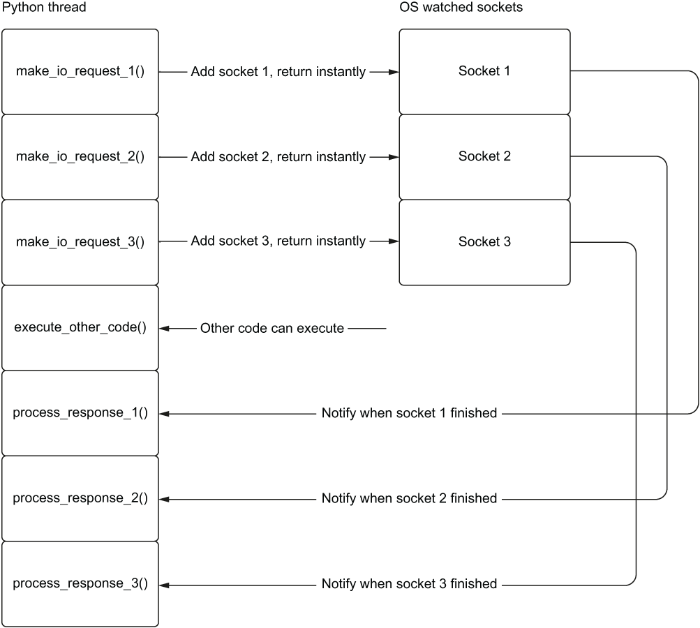
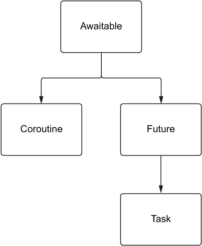

Can preheat the oven while preparing the first cake.
Can start the second cake while the first one is in the oven.
\RightarrowSwitching between tasks is concurrency (or concurrent behavior).
Two bakers and two cakes to prepare.
Can prepare both cakes at the same time.
\RightarrowDoing multiple tasks in parallel is parallelism (or parallel behavior).
With concurrency, we have multiple tasks happening at the same time, but only one we’re actively doing at a given point in time. With parallelism, we have multiple tasks happening and are actively doing more than one simultaneously.
Concurrency is about multiple independent tasks that can happen.
Parallelism is concurrency AND simultaneous execution.
While parallelism implies concurrency, concurrency does not always imply parallelism.
\Rightarrow Concurrency is a broader concept than parallelism.
6.2 Multitasking
6.2.1 Preemptive multitasking
The operating system decides when to switch between tasks.
The tasks are not aware of each other.
6.2.2 Cooperative multitasking
In this model we have to explicitly to decide when to switch between tasks.
The tasks are aware of each other.
6.3 Benefits of cooperative multitasking
Less overhead than preemptive multitasking.
Granular/optimal control over when to switch between tasks.
7 Processes, threads, multithreading, and multiprocessing
7.1 Multi-processing vs Multi-threading
Multi-Processing
Multi-Threading
7.2 Processes and threads
import osimport threadingprint(f'Python process running with process id: {os.getpid()}')total_threads = threading.active_count()thread_name = threading.current_thread().nameprint(f'Python is currently running {total_threads} thread(s)')print(f'The current thread is {thread_name}')
Python process running with process id: 36282
Python is currently running 8 thread(s)
The current thread is MainThread
7.3 Creating processes
import multiprocessingimport osdef hello_from_process():print(f'Hello from child process {os.getpid()}!')if__name__=='__main__': hello_process = multiprocessing.Process(target=hello_from_process) hello_process.start()print(f'Hello from parent process {os.getpid()}') hello_process.join()
Hello from parent process 36282
Traceback (most recent call last):
File "<string>", line 1, in <module>
from multiprocessing.spawn import spawn_main; spawn_main(tracker_fd=84, pipe_handle=86)~~~~~~~~~~^^^^^^^^^^^^^^^^^^^^^^^^^^^^^^^
File "/Users/fradav/.local/share/uv/python/cpython-3.13.2-macos-aarch64-none/lib/python3.13/multiprocessing/spawn.py", line 122, in spawn_main
exitcode = _main(fd, parent_sentinel)
File "/Users/fradav/.local/share/uv/python/cpython-3.13.2-macos-aarch64-none/lib/python3.13/multiprocessing/spawn.py", line 132, in _main
self = reduction.pickle.load(from_parent)
AttributeError: Can't get attribute 'hello_from_process' on <module '__main__' (<class '_frozen_importlib.BuiltinImporter'>)>
7.4 Creating threads
import threadingdef hello_from_thread():print(f'Hello from thread {threading.current_thread()}!')hello_thread = threading.Thread(target=hello_from_thread)hello_thread.start()total_threads = threading.active_count()thread_name = threading.current_thread().nameprint(f'Python is currently running {total_threads} thread(s)')print(f'The current thread is {thread_name}')hello_thread.join()
Hello from thread <Thread(Thread-6 (hello_from_thread), started 6307770368)>!
Python is currently running 8 thread(s)
The current thread is MainThread
8 And all hell broke loose: the GIL
8.1 What about Python?
Designed for sequential and single-core architecture from the beginning
Everything is interpreted
All dynamic (no static types)
8.2 The GIL
Aka Global Interpreter Lock
. . .
The GIL allows thread usage, you can create threads and launch them: YES!
. . .
but…
. . .
Only ONE thread can actually execute code at python level..
By default, the socket is blocking, i.e. the program will wait until the socket is ready to be read or written.
We can make the socket non-blocking, i.e. the program will not wait for the socket to be ready to be read or written. \Rightarrow Later on, the OS will tell us we received byte and we deal with it.

Making a non-blocking I/O request returns immediately
tells the O/S to watch sockets for data \Rightarrow This allows execute_other_code() to run right away instead of waiting for the I/O requests to finish
Later, we can be alerted when I/O is complete and process the response.
asyncdef coroutine_add_one(number: int) ->int:return number +1def add_one(number: int) ->int:return number +11function_result = add_one(1)2coroutine_result = coroutine_add_one(1)print(f'Function result is {function_result}\n\ and the type is {type(function_result)}')print(f'Coroutine result is {coroutine_result}\n\ and the type is {type(coroutine_result)}')
1
function call, is executed immediately.
2
coroutine call, is not executed at all, but returns a coroutine object.
Function result is 2
and the type is <class 'int'>
Coroutine result is <coroutine object coroutine_add_one at 0x106d61cc0>
and the type is <class 'coroutine'>
import asyncioasyncdef coroutine_add_one(number: int) ->int:return number +11result = asyncio.run(coroutine_add_one(1))print(result)
1
This launches the event loop, executes the coroutine, and returns the result.
Warning
This code will not work in a Jupyter notebook, because the event loop is already running (by Jupyter itself). So you just have to replace the line 4 by:
Pause, and wait for the result of main(). (outside of a Jupyter notebook, you have to launch the event loop somewhere, like asyncio.run(main()) instead of await main())
sleeping for 3 second(s)
sleeping for 3 second(s)
sleeping for 3 second(s)
finished sleeping for 3 second(s)
finished sleeping for 3 second(s)
finished sleeping for 3 second(s)
import asyncioasyncdef hello_every_second():for i inrange(2):await asyncio.sleep(1)print("I'm running other code while I'm waiting!")asyncdef main(): first_delay = asyncio.create_task(delay(3)) second_delay = asyncio.create_task(delay(3))await hello_every_second()await first_delayawait second_delayawait main()
sleeping for 3 second(s)
sleeping for 3 second(s)
I'm running other code while I'm waiting!
I'm running other code while I'm waiting!
finished sleeping for 3 second(s)
finished sleeping for 3 second(s)
import asynciofrom asyncio import CancelledErrorasyncdef main(): long_task = asyncio.create_task(delay(10)) seconds_elapsed =0whilenot long_task.done():print('Task not finished, checking again in a second.')await asyncio.sleep(1) seconds_elapsed = seconds_elapsed +1if seconds_elapsed ==5: long_task.cancel()try:await long_taskexcept CancelledError:print('Our task was cancelled')await main()
Task not finished, checking again in a second.
sleeping for 10 second(s)
Task not finished, checking again in a second.
Task not finished, checking again in a second.
Task not finished, checking again in a second.
Task not finished, checking again in a second.
Task not finished, checking again in a second.
Our task was cancelled
11.4 Setting a timeout
import asyncioasyncdef main(): delay_task = asyncio.create_task(delay(2))try: result =await asyncio.wait_for(delay_task, timeout=1)print(result)except asyncio.exceptions.TimeoutError:print('Got a timeout!')print(f'Was the task cancelled? {delay_task.cancelled()}')await main()
sleeping for 2 second(s)
Got a timeout!
Was the task cancelled? True
12 Tasks, coroutines, futures, and awaitables
12.1 Introducing futures
from asyncio import Futuremy_future = Future()print(f'Is my_future done? {my_future.done()}')my_future.set_result(42)print(f'Is my_future done? {my_future.done()}')print(f'What is the result of my_future? {my_future.result()}')
Is my_future done? False
Is my_future done? True
What is the result of my_future? 42
12.2 Awaiting futures
from asyncio import Futureimport asynciodef make_request() -> Future: future = Future()1 asyncio.create_task(set_future_value(future))return futureasyncdef set_future_value(future) ->None:2await asyncio.sleep(1) future.set_result(42)asyncdef main(): future = make_request()print(f'Is the future done? {future.done()}')3 value =await futureprint(f'Is the future done? {future.done()}')print(value)await main()
1
Create a task to asynchronously set the value of the future.
2
Wait 1 second before setting the value of the future.
3
Pause main until the future’s value is set.
Is the future done? False
Is the future done? True
42
12.3 Comparing tasks, coroutines, futures, and awaitables

Awaitables
Objects that can be awaited in an async function, including coroutines, tasks, and futures.
Coroutines
Special functions that can be paused and resumed later, defined using async def, and can be awaited to allow other coroutines to run.
Futures
Represent the result of an asynchronous operation, manage its state, and can be awaited to get the result.
Tasks
Schedule and run coroutines concurrently, and can be used to cancel or check their status.
13 Benchmarking
13.1 With a decorator
import functoolsimport timefrom typing import Callable, Anydef async_timed():def wrapper(func: Callable) -> Callable:@functools.wraps(func)asyncdef wrapped(*args, **kwargs) -> Any:print(f'starting {func} with args {args}{kwargs}') start = time.time()try:returnawait func(*args, **kwargs)finally: end = time.time() total = end - startprint(f'finished {func} in {total:.4f} second(s)')return wrappedreturn wrapper
starting <function main at 0x106db4680> with args () {}
starting <function delay at 0x106db44a0> with args (2,) {}
sleeping for 2 second(s)
starting <function delay at 0x106db44a0> with args (3,) {}
sleeping for 3 second(s)
finished sleeping for 2 second(s)
finished <function delay at 0x106db44a0> in 2.0015 second(s)
finished sleeping for 3 second(s)
finished <function delay at 0x106db44a0> in 3.0015 second(s)
finished <function main at 0x106db4680> in 3.0022 second(s)
13.3asyncio.gather
asyncio.gather() runs multiple asynchronous operations, wraps a coroutine as a task, and returns a list of results in the same order of awaitables.
starting <function main at 0x106db5120> with args () {}
starting <function cpu_bound_work at 0x106db4f40> with args () {}
finished <function cpu_bound_work at 0x106db4f40> in 1.2576 second(s)
starting <function cpu_bound_work at 0x106db4f40> with args () {}
finished <function cpu_bound_work at 0x106db4f40> in 1.2429 second(s)
finished <function main at 0x106db5120> in 2.5009 second(s)
starting <function main at 0x107e04400> with args () {}
starting <function get_example_status at 0x106db53a0> with args () {}
finished <function get_example_status at 0x106db53a0> in 0.0708 second(s)
starting <function get_example_status at 0x106db53a0> with args () {}
finished <function get_example_status at 0x106db53a0> in 0.0463 second(s)
starting <function get_example_status at 0x106db53a0> with args () {}
finished <function get_example_status at 0x106db53a0> in 0.0470 second(s)
finished <function main at 0x107e04400> in 0.1644 second(s)
starting <function main at 0x106db51c0> with args () {}
[200, 200, 200, 200, 200, 200, 200, 200, 200, 200]
finished <function main at 0x106db51c0> in 0.8712 second(s)
15.5 Multithreading with numpy
Let’s define a big matrix on which we will compute the mean of each row.